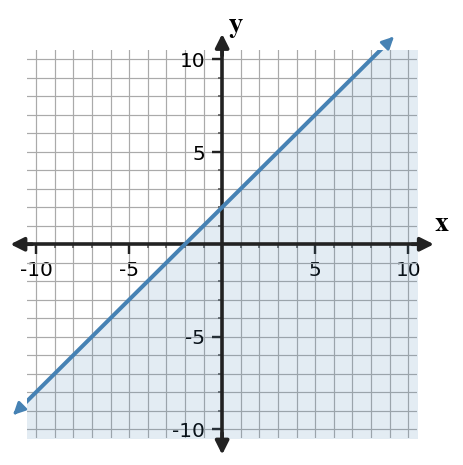
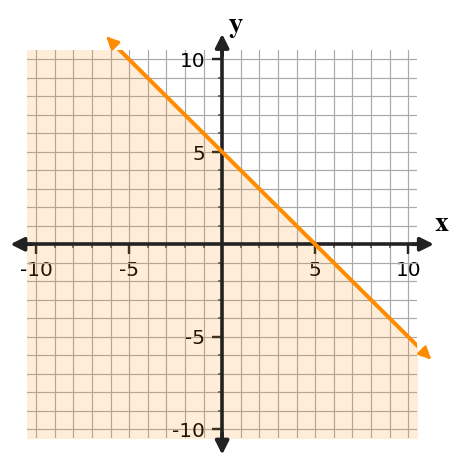
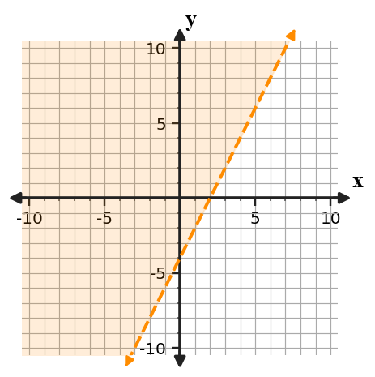

Graphing Linear Inequalities
Mathematical idea: A linear inequality graph shows all points that make the inequality true, not just one point.
Today you will practice the representations named in the learning target. You will connect skills from examples to an exit ticket that checks both procedures and meaning.
Learning Target
Learning Target: Students will graph and interpret linear inequalities.
I can statements
- I can construct a boundary line and shaded region for a linear inequality.
- I can use test points to interpret which region satisfies an inequality.
- I can critique a graph of a linear inequality using the boundary, shading, and solution region.
What's To Come
This is a long-range preview for future lessons. Do not solve it today. Instead, annotate it individually. Circle anything familiar, underline symbols or directions that seem important, and write notes about what information you think will be needed later.
As you annotate, ask yourself: What parts (words, symbols, graphs) do you KNOW? What parts look FAMILIAR? What parts look like jibberish?
A poster claims to model “students need at least 20 total practice problems, with $x$ online problems and $y$ paper problems” using $x+y\lt 20$ and a dashed boundary.

- Revise the inequality so it matches the phrase “at least.”
- Describe the correct boundary and shading.
- Give one point that should be feasible and one point that should not.
Intro
Directions
Read the introduction aloud with a partner or in a small group. As you read, annotate the text by highlighting important ideas, circling key vocabulary, and writing short notes about connections, questions, or predictions in the margins.
A linear inequality graph begins with a boundary line. A solid boundary means points on the line are included in the solution set, while a dashed boundary means points on the line are not included. The symbols $\le$ and $\ge$ use solid boundaries, and $\lt$ and $\gt$ use dashed boundaries.
After the boundary is drawn, the graph still needs the correct half-plane. A test point is substituted into the inequality to decide which side satisfies the statement. If the test point makes a true statement, shade the side containing that point.
A graph can have the right line but still show the wrong solution region. It can also shade the correct side but use the wrong boundary type. Careful graphing checks both decisions instead of treating the line as the whole answer.
Useful representations include linear inequalities, solid and dashed boundary lines, shaded half-planes, test points, and solution-region statements. A solution is any point in the shaded region, with boundary points included only when the symbol allows equality.
Inequalities often model limits such as budgets, minimums, and maximums. The graph shows many possible choices instead of just one ordered pair.
Stop and Discuss
- What does a solid boundary line show that a dashed boundary line does not?
- How can a test point help decide which side to shade?
- Why do both boundary type and shading direction matter in a linear inequality graph?
The inequality symbol tells whether the boundary line is included.
$\le$
Solid boundary; shade below for $y$ is less than or equal.
$\ge$
Solid boundary; shade above for $y$ is greater than or equal.
$\lt$
Dashed boundary; shade below for $y$ is less than.
$\gt$
Dashed boundary; shade above for $y$ is greater than.
Example 1: Choose the Boundary Type
Consider the inequality $y\le -3x+2$.
- Should the boundary line be solid or dashed?
- Name the boundary equation.
- Explain what the equality part of the symbol tells you.
You Try It 1: Choose the Boundary Type
Consider the inequality $y\gt x-4$.
- Should the boundary line be solid or dashed?
- Name the boundary equation.
- Explain why the symbol changes the boundary type.
Stop and Discuss
- How did the inequality symbol decide the boundary type?
A test point decides which side of the boundary line satisfies the inequality.
$$y\le x+2$$Test $(0,0)$: $0\le 0+2$ is true, so shade the side containing $(0,0)$.

Context: Every point in the shaded half-plane is a possible solution to the inequality.
Example 2: Graph a Linear Inequality
Graph the inequality on the coordinate plane.
- Draw the boundary line and decide solid or dashed.
- Use a test point to decide which side to shade.
- Name one point that is a solution.
You Try It 2: Graph a Linear Inequality
Graph the inequality on the coordinate plane.
- Draw the boundary line and decide solid or dashed.
- Use a test point to decide which side to shade.
- Name one point that is not a solution.
Stop and Discuss
- Why is a test point safer than guessing the shaded side?
Example 3: Boundary and Shaded Side
Analyze the inequality $y\lt \frac{1}{2}x+5$.
- Identify the boundary line.
- Decide whether the boundary is solid or dashed.
- Use a test point to decide the shaded side.
You Try It 3: Boundary and Shaded Side
Analyze the inequality $y\ge -2x-3$.
- Identify the boundary line.
- Decide whether the boundary is solid or dashed.
- Use a test point to decide the shaded side.
Stop and Discuss
- How are boundary type and shaded side separate decisions?
A critique checks two separate decisions: whether the boundary is solid or dashed, and whether the shaded side satisfies the inequality.
$$y\lt -x+4$$
For $y\lt -x+4$, the boundary should be dashed and the region should be below the line. A solid boundary or above shading changes the solution set.
Example 4: Critique a Graph
A student graphs $y\gt -x+5$ with the graph below.

- Identify the boundary mistake.
- Identify the shading mistake.
- Write a revision that would make the graph correct.
You Try It 4: Critique a Graph
A student graphs $y\le 2x-4$ with the graph below.

- Identify the boundary mistake.
- Identify the shading mistake.
- Write a revision that would make the graph correct.
Stop and Discuss
- What two revisions should a critique of an inequality graph always check?
Summary
Today you graphed and interpreted linear inequalities as solution regions.
The inequality symbol controls the boundary type, and a test point helps decide the shaded side.
A common error is drawing the correct boundary but shading the wrong half-plane.
Strong understanding means you can explain which points are solutions and critique both boundary and shading choices.
Common Mistakes
- Wrong boundary type. Why it is tempting: students focus on the line first. What to check instead: match $\le$ and $\ge$ to solid, $\lt$ and $\gt$ to dashed.
- Wrong shaded side. Why it is tempting: above and below can be guessed visually. What to check instead: use a test point.
- Testing a point on a dashed line. Why it is tempting: boundary points are easy to calculate. What to check instead: choose a point not on the boundary.
- Graphing only the boundary. Why it is tempting: the line looks like a complete graph. What to check instead: include the shaded solution region.
- Forgetting that solutions are points. Why it is tempting: inequality answers look like regions. What to check instead: name a point and check it in the inequality.
Optional Future Task Reflection
Look back at the future task. Do not solve it yet. Highlight one part that makes more sense now than it did at the beginning. Circle one part that still feels unfamiliar. Write one sentence about what representation you would look at first.
For $y\ge 2x-1$, should the boundary line be solid or dashed?
Graph the inequality $y\ge x-3$.
What is one idea about graphing linear inequalities you understand better now than at the start of class? Write at least one complete sentence.
What is one thing about graphing linear inequalities you still want to understand or practice? Be specific — name the idea, not just "everything."